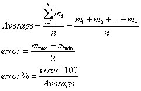
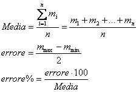

A bit of theory |
Calcolo della Media |
Un po' di teoria |
|
Often, when a physical quantity is measured more times, different measures are obtained
that vary among them. The variability of the measures is explained with the presence of
inevitable errors that they are committed during the measure and it can depend: from the
system of measure (systematic errors) and from other external factors (random errors)
hardly controllable as vibrations, current of air, thermal expansion, etc.). Given the dispersion of the measures the operation of arithmetic average it is that which guarantees a more truthful respect of the measure. To make the complete measure purchases importance to also determine the uncertainty of the same measure. Uncertainty determines its "tolerance" of the measure. In the succession we will simply call it error. The error percentage gives us an immediate way to sense that they are scattered and accurate the measures. Note: The hypothesis of base to correctly make some measures is that not to have systematic errors but only casual errors. In fact in this last case the average automatically resets the casual errors. Generally it is rather difficult to individualize and to reset completely the systematic errors. |
Spesso quando si misura una grandezza fisica più volte si ottengono diverse misure
che si discostano tra loro. La variabilità delle misure si spiega con la presenza di
inevitabili errori che si commettono durante la misura e possono dipendere: dal sistema
di misura (errori sistematici) e da altri fattori esterni (errori casuali) difficilmente
controllabili come vibrazioni, correnti di aria, dilatazione termica, ecc.). Data la dispersione delle misure l´operazione di media aritmetica è quella che garantisce di più una stima veritiera della misura. Per rendere la misura completa acquista importanza determinare anche l´incertezza della misura stessa. L´incertezza determina la "tolleranza" della misura stessa. Nel seguito la chiameremo semplicemente errore. L´errore percentuale ci dá in maniera immediata la sensazione di quanto sono disperse ed accurate le misure. Note: L'ipotesi di base per fare correttamente delle misure è quella di non avere errori sistematici ma solo errori casuali. Infatti in quest'ultimo caso la media azzera automaticamente gli errori casuali. In genere è piuttosto difficile individuare ed azzerare completamente gli errori sistematici. |
|
|
Adopted formulas:  |
Scarica l'applet ed il relativo codice java (±9 KB) Download the applet and the Java code (±9 KB) |
Formule adottate:  |
|
How to use the web calculator: Enter the measure values starting from the first position. To see the results click on the button <Calcola>. Use the web calculator only to verify your calculations. The button <Reset> initialize all the values in the form. Note: The abbreviation "u.m." stand by measure unit. |
Come utilizzare la calcolatrice: Digitare ordinatamente, partendo dalla prima posizione, il valore delle misure. Per vedere i risultati premere il pulsante <Calcola>. Utilizzare la calcolatrice per verificare se i vostri conti sono esatti. Il pulsante <Reset> azzera tutti i valori scritti nella finestra. Note: La sigla "u.m." sta per unitá di misura. |